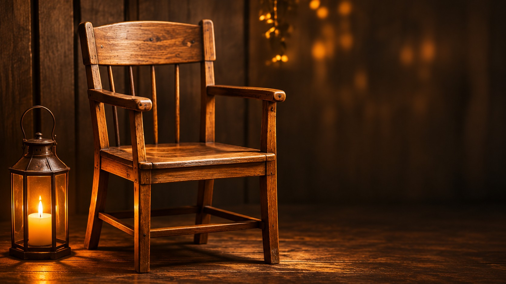
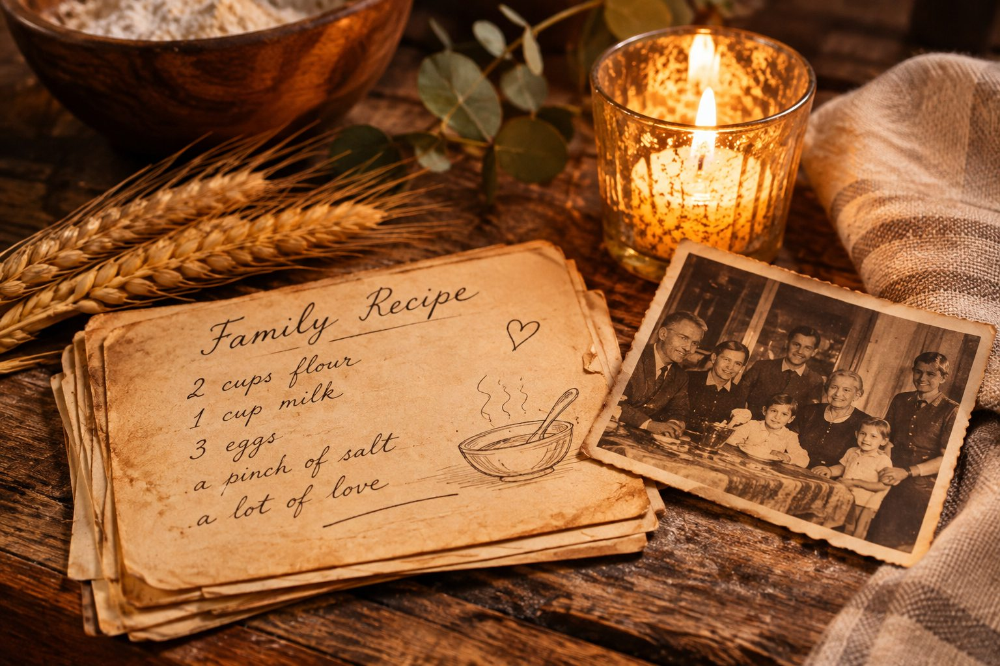
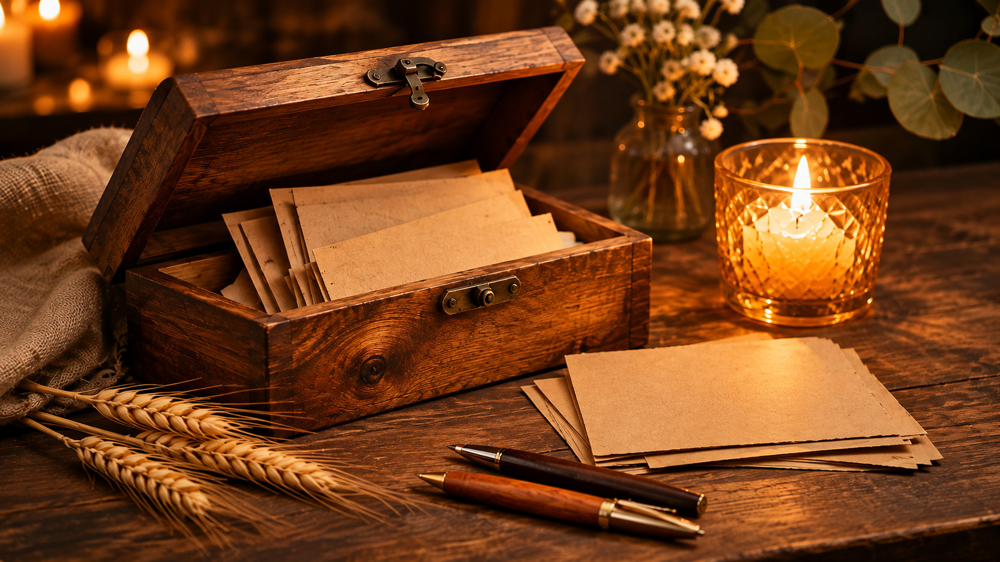
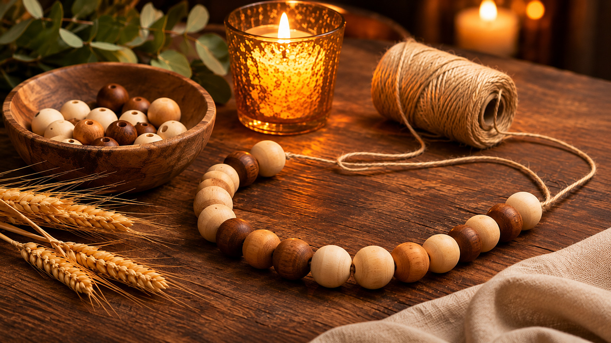

Recipes from home
Ukrainian dumplings, deruny (potato pancakes), and syrnyky (cheese pancakes).
November 12, 2026 · i.c.stars
A gathering to honor those who came before us, the traditions we carry, and the community we build together.
Organized by Mariia Kit, Raymond Hall & Andre Woolfolk
Why we gather
Before we became who we are today, someone came before us. Through recipes, memories, sacrifices, kindness, and courage, our ancestors helped shape our journeys.
We may come from different places, but tonight we gather around one table — with curiosity, gratitude, and respect.
ONE CANDLE · ONE STORY
OUR ROOTS

A place in our memories
Some of those who shaped us can no longer sit at our table. Their wisdom, love, and sacrifices remain part of who we are. Tonight, we leave space in our hearts for their stories.
Stories in every dish
Different ingredients. Different traditions. The same love. These are some dishes guests planned to bring — each person's own story is theirs to tell.
Ukrainian dumplings, deruny (potato pancakes), and syrnyky (cheese pancakes).
Tamales, including red-and-green varieties, flan, and horchata, a cinnamon rice drink.
Collard greens, hot-water cornbread, salmon croquettes, chicken, and pasta.
Spaghetti, salmon on rolls, pie, fresh mango, and more family favorites.
Our community includes African American, Mexican, Pakistani, Ukrainian, and Belizean roots, among many others. Foods are not assigned to individuals or cultures without their confirmation.

Pass it forward
Think of a familiar dish. Who taught you to make it? What memory returns with the first bite? What would you like the next generation to remember?
Together
Our differences can make our shared purpose stronger.
Two moments · One shared purpose
At the start of dinner, write a message for the Memory Box. Near the end of the evening, we will gather to build the Unity Garland together.

At the beginning · At your own pace
Introduced in the opening presentation: write a word, lesson, wish, or memory inspired by your family or ancestors. Place the card in the wooden box whenever you wish during dinner. Names and participation are optional.
The garland is our connection. The box holds our stories.

Later in the evening · Together
Near the end of dinner, we gather as one group. Each person who wants to participate adds one wooden bead to the same cord. We finish the garland together as a keepsake of our community.
Each bead is unique. The thread connects us.
Your invitation
What is one value, lesson, or memory from your ancestors or family that you want future generations to carry forward?
After the dinner, the organizers can preserve the garland and cards. We will publish guests' words or identifiable photographs only with their permission.
Near the end of dinner
When everyone is ready, open the brief closing presentation and add one bead each to our shared cord. We will tie it together and photograph it beside the Memory Box.
The Wisdom We Carry
After dinner, a few messages may appear here with their authors' permission. The original cards remain in our wooden Memory Box, alongside our completed Unity Garland.
The moments we make
Photos from the gathering will be added here after the event. Guests' permission matters: only share photographs approved for a public website.
After November 12, memories will find a home here.
A place for every story
Thank you to everyone who cooked, shared, listened, and made room at the table.
Back to the beginning ↑